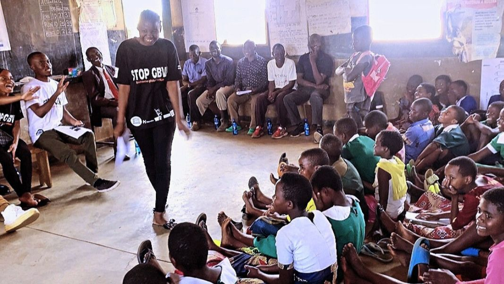
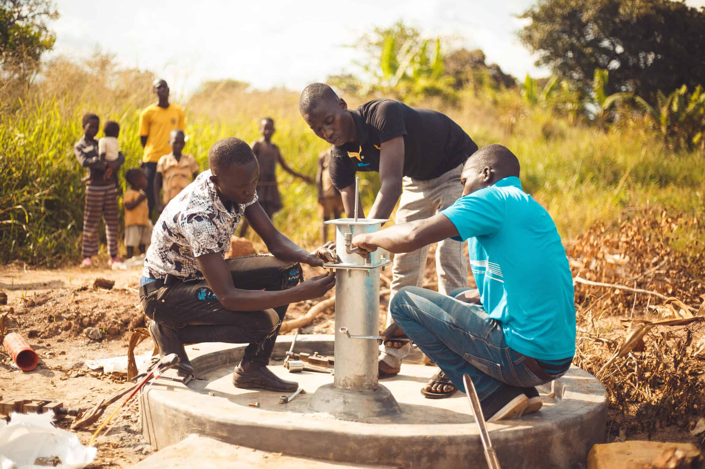
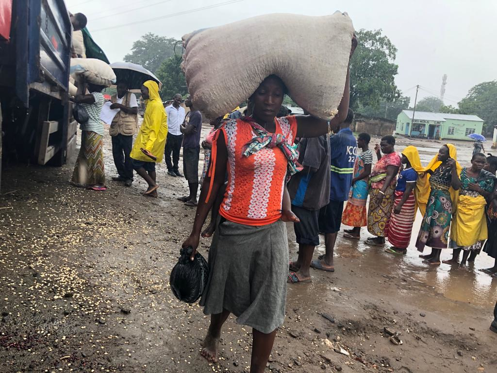
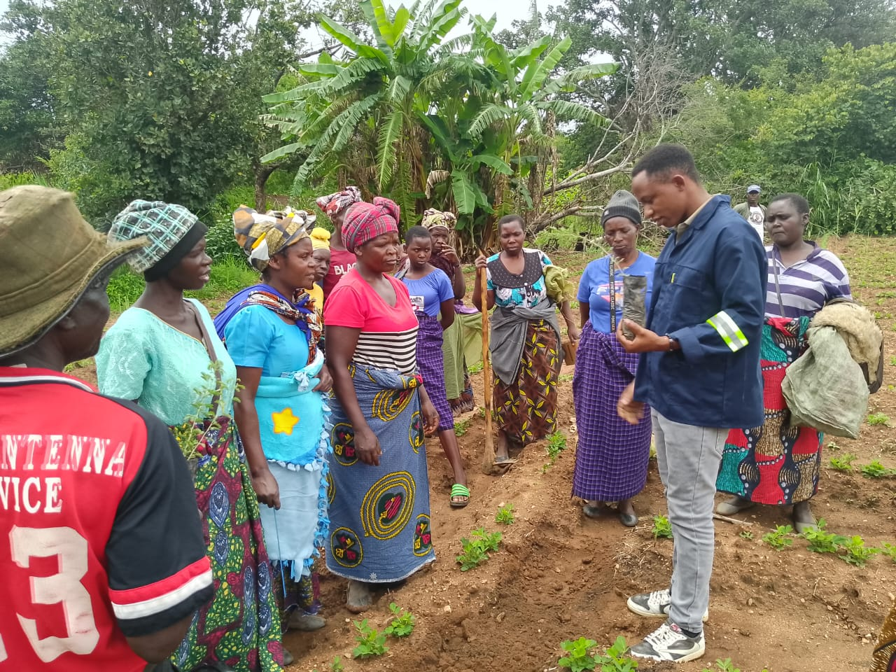
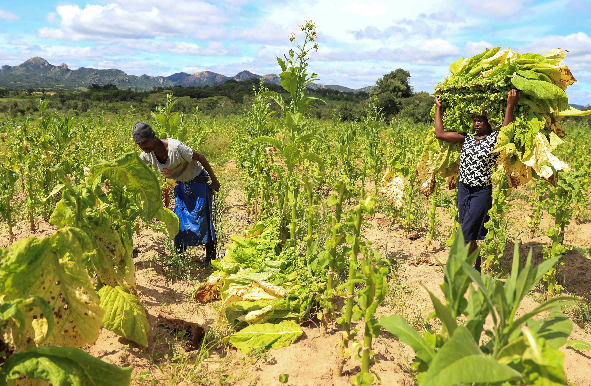

Six Real Programs. Thousands of Lives.
Every project below has documented outcomes, real beneficiaries, and published reports. We never claim more than we can prove.

♀Building Sustainable Gender Equality & Social Inclusion
Partnered with UNESCO to empower marginalized communities through tailored workshops addressing gender-based violence, child labour, school dropout, and inequality — creating safe and inspiring learning spaces.
- Community dialogues on gender norms in 100+ villages
- Girls' attendance rose from 40% to 85%
- 112% increase in girls' test scores
- Teacher training on inclusive pedagogy

💧Access to Clean Water in Rural Malawi
Drilling hand-pump boreholes and solar water systems across rural districts, training local Water Point Committees to ensure every installation is community-owned and sustainable long after our team leaves.
- Solar-powered and hand-pump boreholes in 11 villages
- Women's walking distance cut from 4km to 100m
- Cholera cases dropped from 47 to 3 in six months
- Water Point Committees: 100% operational

🌪️Cyclone Freddy Relief & Livelihood Recovery
When Cyclone Freddy devastated communities in southern Malawi in 2023, ClimateWise mobilised to support survivors — not just with emergency aid, but with skills and tools to rebuild resilient, independent livelihoods.
- Entrepreneurship training for disaster survivors
- Irrigation skills to restore agricultural livelihoods
- Community mental health and peer support sessions
- Climate-resilient rebuilding guidance

🌾Climate-Smart Agriculture & Food Security
We train smallholder farmers in conservation agriculture, drought-resistant varieties, and market access — equipping them to triple yields and build food security despite increasingly unpredictable rains.
- Farmers Field Schools (FFS) in Dowa and surrounding districts
- James (Dowa): 10 bags/acre → 30 bags/acre after one season
- 65% women beneficiaries — gender-intentional by design
- 3 entrepreneur centres for market access and value addition
 Agroforestry
Active
Agroforestry
Active
Agroforestry Restoration Initiative (ARI)
A government-endorsed, community-led forest recovery program combining tree planting, beekeeping livelihoods, and institutional partnerships with Malawi's Forestry Department to restore degraded land sustainably.
Capacity Building
39 community leaders trained in agroforestry techniques across target villages.
Nursery Development
4 operational nurseries with 1,500 seedling capacity — community-managed.
Institutional Engagement
Formal MOA with Malawi Forestry Department. Endorsed by 8 Traditional Authorities.
A complementary livelihood initiative promoting sustainable income through community-based beekeeping — connecting forest restoration with family income.

📊Diversification of Rural Economic Activities
A research initiative assessing the impact of diversifying rural economic activities to reduce income inequality among tobacco smallholder farmers — informing future programs and government policy.
- Field research across tobacco smallholder communities
- Identified key income diversification barriers
- Recommendations adopted in subsequent agriculture programs
- Openly published for sector-wide use